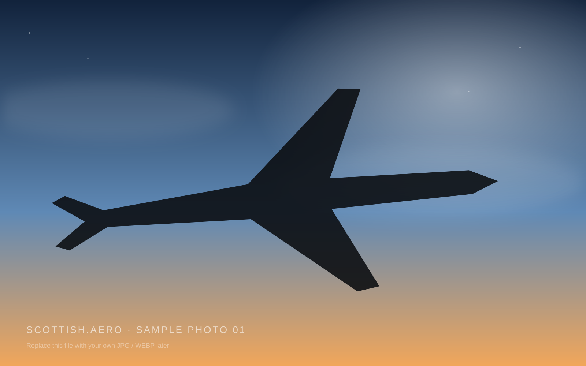

Aviation photography · Scotland
SCOTLANDLOOK UP.
Aircraft, airports and the people behind the lens. A visual archive of aviation across Scotland.
Featured locationEdinburgh · EDI
CommunityMade by Scottish AvGeeks
55.95° N · 3.37° WScroll to explore ↓
Latest from the lens
Scotland, one frame at a time.
From everyday movements to the aircraft that make everyone at the fence turn around at once.
Selected by the group
Photo of the week.
One image. One movement. One moment worth remembering.
Explore the country
Six airports. Thousands of stories.
Start with an airport, then disappear into the movements, weather and moments captured there.
Behind the photographs
Meet the spotters.
Different airports, different styles, same automatic reaction when something interesting appears on approach.
Scottish.aero